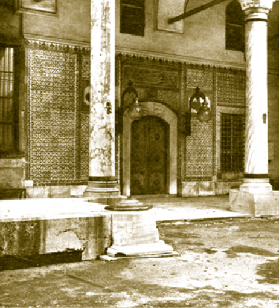
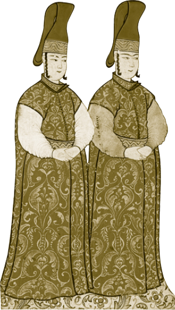
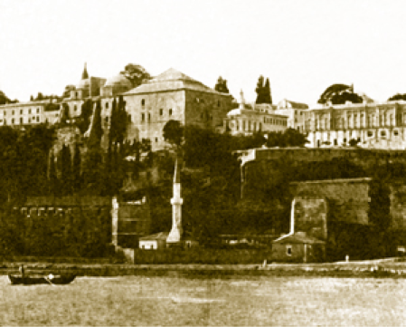
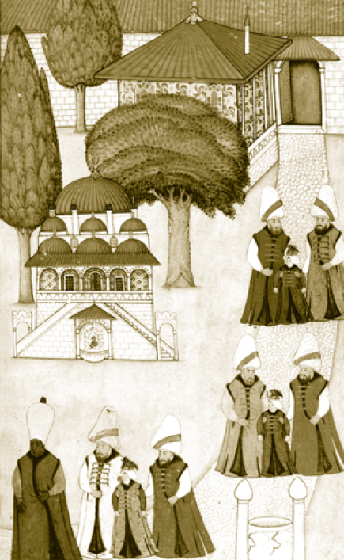

HAS ODA’DA YAPILAN MERASİMLER
Hırka-i Saadet Dairesi Osmanlı padişahlarınca her zaman ihtimam gösterilen bir yer olmuştur. Burası padişahların hem çalışma büroları hem de bir ibadet ve tören yeridir. Burada meşhur beş merasim icra edilir.
Devamı Bâbü’s saade önünde yapılan üç merasim öncesi burada merasim yapılırdı. Bu merasimler; cülûs merasimi öncesinde yapılan iç biat, sefer zamanı burada saklanan Sancak-ı Şerif’in padişah tarafından çıkartılması ve padişah cenazelerinin Has Oda’nın dış cephesindeki çeşmede gasledilip dairenin önündeki mermer sekiye konulmasıdır.
Hırka-i Saadet Ziyareti
Çok zengin bir koleksiyon olan Mukaddes Emanetler bölümünde Osmanlı merasimlerine de konu olan iki parça çok mühimdir ki bunlar Hırka-i Saadet ile Sancak-ı Şerif’tir (Liva-i Şerif).
Hırka-i Saadet: Hz. Peygamber’in Kâ’b ibn Züheyr’e hediye etmiş olduğu hırkadır. Kâ’b ibn Züheyr Huzur-u Saadet’te tövbe edip Müslüman olmuş ve Peygamberimize bir kaside okumuştur. Bunun üzerine Hz. Peygamber çok duygulanmış ve sırtındaki hırkasını, Kâ’b’a giydirmiştir. Bu hâdise bütün İslâm âleminde yankı uyandırmış ve bu hırka (bürde), İslâm devletlerinin hükümdarlarınca Peygamber yolunda gitmenin ve O’nun halifesi olmanın simgelerinden biri olarak kabul edilmiştir.
Hırka daha sonra Emevi Halifesi Muaviye tarafından satın alınmış ve bayramlarda giyilmiştir. Halifeden halifeye aktarılan hırka, Abbasi halifelerince de dinî günlerde giyilmiştir. Hırka her İslâm halifesinin ülkesinde muhafaza edilmiştir. Osmanlı padişahları da kendi halifeliklerinin simgesi saydıkları bu bürdenin koruyuculuğunu üstlenmişlerdir. Hırkanın sarayda korunmasından Has Oda’nın zülüflü ağaları, bakımından ise tülbend ağası (son dönemlerde de hazine kethüdası) sorumludur. Hırka-i Saadet’in dışı siyah içi krem renginde yündür.
Ramazan ayının ortasında her padişah, aynı zamanda Müslümanların halifesi olarak, törenle Hırka-i Saadet’i ziyaret eder.
Ramazan ayının on beşinci gününün gecesinde Mukaddes Emanetler’in bulunduğu Has Oda’da bizzat padişahın da katıldığı bir temizlik merasimi yapılırdı. Padişah gül suyuna batırılmış süngerlerle Hırka-i Saadet şebekelerini temizlerdi. Çuhadar ve rikapdar ağalar, has odalılar, gedikliler gibi görevliler de dairenin kapılarını, pencerelerini, duvarlarını vs. temizlerlerdi.
On beşinci günün gecesi (on dördüncü günün akşamı) yapılan bu temizliğin ardından ramazanın on beşine denk gelen ertesi gün ziyaretler yapılırdı. O gün sabah namazı Hırka-i Saadet dairesinde kılınırdı. Hırka-i Saadet sandukası padişahta bulunan altın anahtarla açılırdı. Hünkâr, sanduka içindeki sırmalı, inci işlemeli, yedi bohça içinden ikinci muhafazayı çıkarırdı. Bu muhafaza, altından yapılma iki kanatlı bir çekmece idi. Bu çekmecenin altın anahtarı da padişahta bulunurdu. Çekmece açıldıktan sonra Hırka-i Saadet’in yakasında bulunan düğme bir kâse içine konulur, bir parça ıslatılır, amber sürülür ve kuruması için ocağa tutulurdu. Kâsede kalan az miktardaki su başka sulara damlatılır ve “Hırka-i Saadet Suyu” olarak hediye edilirdi. Bu geleneği Sultan II. Mahmud kaldırmıştır. Hırka-i Saadet ziyareti Ayasofya Camii’nde öğle namazı kılınmasını müteakip yapılırdı. Baş imam, ikinci imam, has oda imamı, müezzin ve çavuş ağalar ayakta sırayla Kur’an okurlardı. Hırka-i Saadet ziyaretine sadrazam ve şeyhülislâm da katılırdı. Merasim sırasında padişah sandukanın yanında, sadrazam sağında, Darü’s saade ağası solunda durarak ziyaret ifa olunurdu. Törene katılacak herkesin gelmesinin ardından padişah sandukayı açar, sadrazamın ve diğer devlet erkânının ziyaretine müsaade ederdi.
Ziyaretlerde Hz. Peygamber’e duyulan saygının bir gereği olarak oturulmaz, bütün merasim boyunca ayakta durulurdu. Ziyarete gelenler dualar okuyarak Hırka-i Saadet bohçasına yüz sürerlerdi. Yapılan ziyaret Hz. Peygamber’in şefaatine nail olmak için yapılırdı. Ziyaret bitirildikten sonra daire en düşük rütbeden başlanarak terk edilirdi. En sonunda şeyhülislâm, sadrazam ve padişah daireyi terk ederdi.
Ramazanın on dördüncü günü vezirler, kethüdalar, yeniçeri ağası, defterdarlar gibi görevlilere tezkireler yazılarak Hırka-i Saadet ziyaretine davet edilirlerdi. Ulemayı ise şeyhülislâm davet ederdi. Ziyaretten sonra, yüz sürülen kısmı Silahdar ağa, altın tas içinde getirilen gül suyu ile yıkar, amber sürerek kuruturdu. Hırka-i Saadet, padişah tarafından, yenilenen bohçasına konulur ve altın çekmeceye yerleştirilirdi. Bu merasim büyük bir huşu içinde yapılırdı. Allah Resûlü’nün hırkasına bohçası dışından bile olsa yüz sürmek herkese büyük bir ruhanî haz verirdi. 19. yüzyıl başlarında hırka yerine hırkanın üzerine örtülen tülbentlere yüz sürülmeye başlanmış ve bu tülbentler daha sonra ziyaretçilere hediye edilmiştir ki bu tülbentlere destimâl denilir. Enderun’un ziyaretinin tamamlanması ve avlunun boşalmasından sonra Harem’de yaşayan kadınlar valide sultan başkanlığında Hırka-i Saadet’i ziyarete gelirlerdi. Harem halkı ziyarette Kuşhâne Kapısı’ndan Has Oda’ya gelirlerdi. Topkapı Sarayı’ndan taşınıldıktan sonra da Harem halkının Dolmabahçe ve Yıldız’dan Topkapı’ya kapalı arabalarda ziyarete geldikleri bilinir.
Bu törenler her sene mutad olarak yapılırdı ve bütün İslâm âleminde geniş yankı uyandırırdı. Hırka-i Saadet ziyaretiyle alâkalı haberlere dönemin gazetelerinde hatta Gaspıralı’nın «Tercüman»ı gibi dış Türkler ve İslâm dünyasındaki yayınlarda da genişçe yer verilir, törenler uzun uzadıya anlatılırdı.
Saray 1830’larda II. Mahmud tarafından hemen hemen terk edilmiş, Abdülmecid’den itibaren de Osmanlı padişahları Topkapı’da kalmamaya başlamışlardır; ancak Mukaddes Emanetler’i Dolmabahçe’ye yahut Yıldız’a getirtmeyip bunların baba ocaklarında kalmasını istemişler ve her yıl ramazan ayının ortasında Hırka-i Saadet ziyaretine gelmeyi ihmal etmemişlerdir. Ramazanın on beşinde yapılan bu ziyaretler için Hırka-i Saadet Alayları kurulmuştur.
Hırka-i Saadet ziyaretlerinin belki de en ilginci Sultan Mehmed Reşad’ın zamanında yapılandır. Sultan vefatından on gün önce son Hırka-i Saadet ziyaretine gelmiştir ki padişah ağır hasta ve hâlsiz olmasına rağmen uzun süren ziyarete başkanlık etmiş; çevresindekilerin geri dönülmesi ısrarlarını kabul etmeyerek bir aralık yere oturmuş, başını Hırka-i Saadet sandığına koyup dinlenmiştir. Mabeynciler padişahın koluna girerek arabasıyla Dolmabahçe’ye götürmüşlerdir. Kaderin garip bir cilvesidir ki padişah on gün sonra buraya yeniden getirilmiş ve gasledilip kefenlenmiştir.
Hırka-i Saadet Dairesi; 1927’de ziyarete kapatılmıştır. Dairenin, yeniden “Mukaddes Emanetler Dairesi” olarak ziyarete açılışı 1962 senesinde olmuştur. Ama Kur’an-ı Kerîm bundan evvel kesintisiz okunmaya devam edilmiştir. O tarihe kadar Taht Odası’nda saklanan Kutsal Emanetler’in birçoğu Arzhâne ve Şadırvanlı Sofa’daki vitrinlere ve nişlere konulmuştur.
Padişah Kızlarının Nikâhlarının Kıyılması
Has Oda’nın muhtevasında barındırdığı Mukaddes Emanetler’den dolayı kudsi bir havası vardı. Bu yüzden padişah kızlarının nikâh törenleri de Has Oda’da yapılırdı. Bu nikâh merasimlerinde devlet erkânı da hazır bulunurdu. Padişah kızlarının genelde üst seviyede vezirlerle evlendirilmeleri âdettendi. Padişahın kızıyla evlenenler, artık saraya damat oldukları için isimlerinin başında damat ifadesine yer verilirdi. 1836’da Sultan II. Mahmud’un kızları Mihrimah Sultan Kaptan-ı Derya Mehmed Said Paşa ile, 1840’da da Atiye Sultan’ın Meclis Azası Ahmed Fethi Paşa ile nikâhları burada kıyılmıştır. Mihrimah Sultan evlendikten bir buçuk yıl sonra doğum esnasında vefat etmiştir.

1960’lı yıllarda Hırka-i Saadet Dairesi’nin girişi,
Buhur Dibeği ve padişah cenazelerinin konulduğu mermer seki
Destimâl Odası
Şadırvanlı Sofa’nın sol tarafında “Yâ müfettiha’l Ebvâb! İftah lenâ hayra’l-bâb./Ey kapalı kapıları açan! Bizlere hayırlı kapılar aç.” şeklinde celi sülüs hatla yazılmış bir dua metni bulunur. Bu kapıdan Destimâl Odası’na girilir. Buraya eski dönemlerde “taamhâne/yemekhane” denilmiştir ki burası Has Odalıların koğuşu olarak uzun süre kullanılmıştır.
Has Odalıların Yavuz Sultan Selim zamanında koğuşu Hırka-i Saadet Dairesi’nin alt katıdır. Buraya Has Oda (Taht Odası) ile Arzhâne arasındaki kapıdan taş merdivenlerle iniliyordu ki daha sonra bu geçit kapatılmıştır. II. Osman, Has Odalılar için Şadırvanlı Sofa’nın yanına yeni bir koğuş (Destimâl Odası) ve hamam yaptırmıştır. Has Oda Koğuşu’nun duvarlarındaki çok sayıda kitabe yapılan tamirlerden bahsetmektedir. En eskisi Sultan Genç Osman dönemine aittir.
Abdurrahman Şeref Bey, Destimâl Odası’na dış kapıdan girilince sağ tarafta üzeri oymalı bir sayebânda Sultan IV. Murad Han’ın oturduğunu rivayet eder.
Cumhuriyet döneminde yapılan yenileme ve tamirlerde Has Oda Koğuşu’ndaki (Destimâl odası) eski kerevetler, bölmeler, camekânlar tamamen kaldırılmış ve oda çinilerle ve kitabelerle kaplı boş bir mekân durumuna getirilmiştir. Son tamir ve düzenlemede de eskiye uyulmuştur.
Hırka-i Saadet ziyaretlerinde hırkaya yüz sürülmesi yerine hırkanın üzerine örtülen tülbentlere yüz sürülmeye başlanmış ve bu tülbentler mendilden biraz daha büyük bir şekilde hazırlanarak ziyaretçilere padişahlar tarafından hediye edilmiştir. Bu tülbent veya mendillere destimâl denilmiştir ki aslen Farsça olan kelime, mendil manasına gelmektedir. Destimâlların tam ortasında talik hatla “Nuru’l Hüda. (Allah’ın nuru) Kulnâ bihi tekrimen sallu aleyhi ve sellimu teslima (Onu yüceltsin diye söyleriz: O’na salat u selam getirin)” ifadesi bulunurdu. Dört köşesinde ise
“Hırka-ı Hazret-i Fahr-ı Resule
Atlas- çarh olamaz pâyendâz
Yüz sürüp zeyline takbîl ederek
Kıl şefî-i ümeme arz-ı niyâz” yazardı.
Destimâllerin üzerlerinde yazan bu ifadelerin baskıları burada yapılırdı. Destimâl odasına Sultan IV. Murad devrinde kubbe yapılmış ve odanın duvarları çinilerle kaplanmıştır. Oda bugün Mukaddes Emanetler’in bir kısmının sergilendiği bir mekândır.
Has Odalılar
Has Odalılar Enderun’un en üst sınıfıydı. Enderun ağaları içinde padişaha en yakın olan kırk seçkin gençten oluşurdu. İlk zamanlar mevcutları otuz iki kişi iken Yavuz Sultan Selim Han devrinde kırk kişiye çıkarılmıştır. Has Oda’nın en büyük zabitleri has odabaşı, Silahdar ağa, çuhadar ağa, rikâbdar ağa, tülbentçi başı ve anahtar ağası idi. Bunlar da dâhil olmak üzere bütün Has Oda mevcudu kırkı bulurdu ve ilk dördüne padişahın yakınında bulunduklarından arz ağaları denilirdi. Has Odalılar saç ve zülüf bırakma ayrıcalığına sahiptiler. Bundan dolayı “zülüflü ağalar” olarak da bilinirlerdi
Has Oda’nın zülüflü ağaları padişaha hizmet vermekte, gerektiğinde ona arkadaşlık, sırdaşlık etmekteydiler. Sultanın hattatlıkla uğraşmasından şiirle meşgul olmasına, Has Bahçe’deki ağaçları budamasından, kitap okumasına, giyinip kuşanmasından yiyip içmesine, Arz Odası’na gitmesinden saray bahçelerinde dolaşmasına, Adalet Kulesi’nden Divan toplantılarını takip etmesinden Kadir Alayı’na katılmasına kadar zülüflü ağaların kendi aralarında belirli vazife ve sorumlulukları vardı.
Has Odabaşı saray mareşali derecesindeydi. Sürekli padişahın yakınında bulunan Has Odabaşı bir manada padişahla birlikte yaşardı. Padişahın günlük işlerini takip eder, padişaha özel işlerinde yardımcı olurdu. Kendisinden sonra gelen silahdar ağa saray başyaveri derecesindeydi, törenlerin protokol şefiydi. Silahdar, padişahın okunu, yayını, kılıcını taşırdı. Bu yüzden bazı gravür ve minyatürlerde silahdarlar, padişahın arkasında ellerinde kılıçla tasvir edilmişlerdir. Çuhadar ağa, alaylarda padişahın arkasında yer alır, padişahın kürklerini, kaftanlarını taşır, bakımlarını yapardı. Rikâbdar ağa, padişahın ayakkabılarından mesuldü. Çizmesini, mest ve pabuçlarını hazırlar ve giymesine yardımcı olurdu. Tülbendçibaşı ise padişahın sarıklarının etrafına tülbent sarar ve hünkârın sarıklarını ve çamaşırlarını hazır bulundururdu. Has Odalılardan iki zülüflü ağa padişah uyuduktan sonra ellerinde şamdanla padişahın yakınında sabaha kadar değişmeli olarak nöbet tutardı.
Şaşılacak bir tesadüf değil, valide sultanın yönettiği Harem-i Hümâyûn’da da gerek zenci hadımağaları gerek cariyeler arasındaki terfi ve görevlerde de buradakine benzer bir paralellik göze çarpar. Osmanlı, Enderun ve Harem’de kan asaletine değil liyakat ve tırmanmaya yeteneği olan insanlardan oluşan bir yönetici ve saraylılar zümresi meydana getirmiştir.
Has Odalılar seçkin konumlarından dolayı çinilerle kaplı bölümlerde, “Emanet-i Mukaddese” dediğimiz Peygamber ve halife emanetlerini muhafaza ederler, burada yirmi dört saat Kur’ân okurlardı. Devlet-i Aliyye’nin muzafferiyeti, Osmanlı sultanının dünya ve ahiret selameti için dua ederlerdi.

Has Odalılar
Has Odalılar Mukaddes Emanetler Dairesi’ni süpürür, dairenin tozunu alır ve buraları gül suyuyla temizlerlerdi. Temizlikten çıkan tozları ayakaltında kalmasın diye Has Oda’nın önündeki dibeğe atarlardı. Mübarek gecelerde daire güzel koksun diye öd ağacı yakarlar ve gül suyu serperlerdi.
Has Oda Koğuşu’nun ramazanlarda vazifesi artardı. Zülüflü ağalardan güzel sesli olanlar, ramazanlarda sarayda çifte ezan okurlardı. Teravih namazlarının aralarında ilâhiler bazen de mevlid okurlardı. Has Odalıların düzenledikleri bu tür dinî programlara padişahlar da iştirak ederdi.
Ramazan ayının on beşinde yapılan Hırka-i Saadet ziyareti öncesinde Mukaddes Emanetler’in bulunduğu Taht Odası’nın temizliğini yaparlar ve başta padişah başta olmak üzere Has Oda ağaları Mukaddes Emanetler’i, Taht Odası’ndan Revan Köşkü’ne taşırlardı. Bu taşıma esnasında padişah da has odalı ağalar gibi çalışırdı.
Has Odabaşıların en meşhuru Makbul/Maktul İbrahim Paşa’dır. Kanuni’nin Has Odabaşısı olan İbrahim Paşa, önce vezir-i âzam, ardından da Kanuni’nin kız kardeşi Hadice Sultan’la evlenerek saraya damat olmuştur.
Enderun’un Odasız Sınıfı
Daha evvel padişahın alıcı kuşları olan şahin ve doğanlara bakan, ayrıca Enderun avlusunda nöbet tutan doğancıların koğuşu, seferlilere verilince odasız kalmışlardır. Doğancılar dışında diğer odasızlar cüceler ve dilsizlerdir.
Cüceler fizik olarak sevimli bulundukları için genelde padişahlara “şirinkârlık” yaparlardı. Bir görevleri de padişahın kitaplıklarına bakmaktı. Cücelere musahiplik unvanı verilirdi. Zaman zaman padişahlara kitap okudukları da bilinir.
Dilsizler ise mahrem devlet konularının görüşüldüğü ortamlarda servis yaparlardı. Bazen de askeri isyana teşvik etmek, devlete başkaldırmak gibi ağır suçların faillerinin cezalarını dilsizler infaz ederlerdi.
Kuşhâne ve Harem Kapısı
Enderun avlusunun Küçük Oda Koğuşu’nun yanındaki köşede günümüzde bulunmayan “Kuşhâne Avlusu” adı verilen küçük bir iç avlu bulunmaktaydı. Bu avludan Harem’e girilebilirdi ki adına “Kuşhâne Kapısı” denilmiştir. Burası günümüzde Harem’den çıkış kapısı olarak kullanılmaktadır.
Harem Kapısı’nın karşısında yer alan Kuşhâne, günümüzde büyük boyutta bir kuş evine benzemektedir. Padişaha sunulacak yemeklerin Has Matbah’ta (sadece padişah yemeklerinin yapıldığı mutfak) hazırlandıktan sonra buradan servis edildiği sanılmaktadır. Kuşhane’nin geceleri yemek ihtiyacı olduğunda kullanıldığına dair rivayetler de vardır.
Harem’in Kuşhâne Kapısı üzerinde Sultan I. Mahmud Han’ın Kuşhâne Mutfağı’nı tamir ettirdiğinin yazılı olduğu bir kitabe bulunur.
Kuşhâne’de kuşçubaşı denilen hizmetliler çalışır. Binanın karşısındaki iki katlı küçük yapı ise kuşçubaşıların kaldığı, daha sonra da eczane olarak kullanılan yerdir.
Sultan II. Mahmud, şehzadeliğinde asilerin elinden Cevri Kalfa tarafından kurtarılmış ve dama çıkan şehzade Kuşhane yakınlarında merdivenlerle aşağıya indirilmiştir.
Güneş Saati
Has Oda Dairesi’nin ön tarafında bulunan güneş saati namaz vakitlerinin belirlenmesi için Fatih zamanında yapılmıştır. Üzerindeki kitabeden saatin Sultan III. Mustafa devrinde tamir ettirildiği anlaşılmaktadır.
Def-i Gam Hatun Çeşmesi
Güneş saatinin arka tarafında Enderun Kütüphanesi’nin sol çaprazında bulunan Def-i Gam Hatun Çeşmesi kethüda eşi Def-i Gam Hatun tarafından yaptırılmıştır. Kitabesinde “Sahibü’l hayrat merhumeyi kethüda, Def-i Gam Hatun’un hayratıdır. Hicri 1226” (M.1810) yazar.
Buhur Dibeği
Has Oda’nın avluya bakan tarafında yer alan mermer dibek, Osmanlılarda Hırka-i Saadet temizliğinin ardından çıkan tozların ayakaltında kalmaması için kullanılmıştır. Kitabesinde dibekle ilgili Farsça bir ifade bulunur.

Sarayın 1900’lü yıllarda denizden görünüşü

Şehzadelerin III. Avlu’da Arz Odası ve III.Ahmed Kütüphanesi’nin yanından geçirilerek
Sünnet Odası’na götürülmesini tasvir eden bir minyatür (Surname)